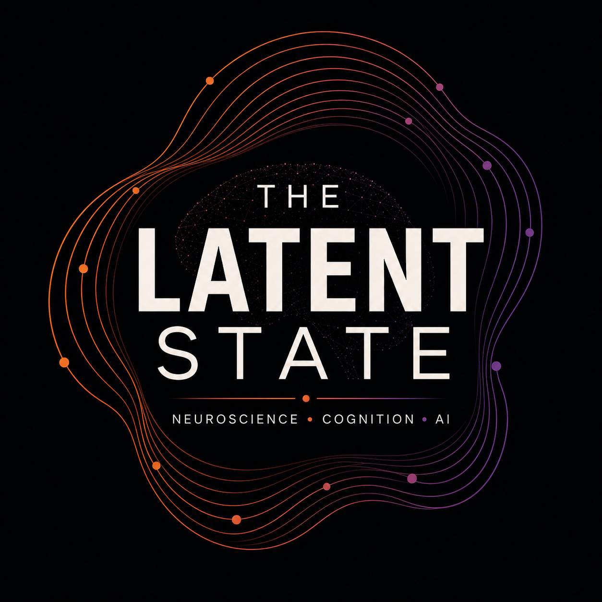

The thinking body
Investigating how internal bodily signals relate to perception, evaluation, and decisions.
INTEROCEPTIONNEUROSCIENCE · COGNITION · AI
I’m Shengbin Cui, a cognitive neuroscientist exploring how we perceive, decide, and create—and what that can teach us about intelligent.
Brain & body / Human cognition / Artificial intelligence / Public understanding
01 / RESEARCH
How does the body shape thought? How do we interpret others? What makes a new idea possible?
My research connects brain–body interaction, perception, and social cognition. Computation offers a way to make these questions precise—and to connect observations with explanations.
Investigating how internal bodily signals relate to perception, evaluation, and decisions.
INTEROCEPTIONExploring the processes behind moral choices and the judgments we make about other people.
SOCIAL COGNITIONUsing computational approaches to study perception, with a broader interest in creativity and AI.
COMPUTATIONShengbin Cui, Ella Nadine Kazazic, & Tamami Nakano
Shengbin Cui & Tamami Nakano
Shengbin Cui & Atsunori Ariga
02 / FROM INSIGHT TO APPLICATION
I’m interested in turning scientific questions into useful tools and experiences. These are directions I want to explore with researchers, founders, and people who build.
What principles from human cognition could help us ask better questions about how AI learns, adapts, and interacts?
Exploring computational tools that help researchers move from an intuition to an experiment, an analysis, or a clearer explanation.
Bringing research into public life through audio, accessible explanations, and interactive ways to explore complex ideas.

03 / SCIENCE, OUT LOUD
The Latent State explores the hidden processes behind mind and intelligence, connecting neuroscience, cognition, and AI.
For curious people inside and outside the lab: a place to engage with research, follow the ideas, and think about what they mean.
Listen on SubstackThe mind & body / Learning & adaptation / Intelligence
04 / BEYOND THE LAB
Outside research, I play clarinet with Game Addict’s Music Ensemble (GAMEバンド). Music is another part of my life—a space for playing, listening, and creating something together.
05 / A LITTLE CONTEXT
I’m Shengbin Cui, a cognitive neuroscientist based in Tokyo. My background spans cognitive psychology and brain physiology, with research interests in brain–body interaction, social cognition, and creativity.
I’m drawn to the space where disciplines meet: where an experiment becomes a model, a model suggests a new tool, or a difficult idea becomes a conversation anyone can join.
Research, building, and science communication are connected ways of pursuing the same question: how can a deeper understanding of minds expand what we can do?
The University of Tokyo
Brain Physiology
The University of Osaka
Cognitive Psychology
Hiroshima University
06 / COLLABORATION
Working on a research question, an early-stage idea, or a new way to share science? I’d like to hear what you’re thinking.
shengbin.cui.1230@gmail.com